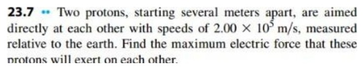
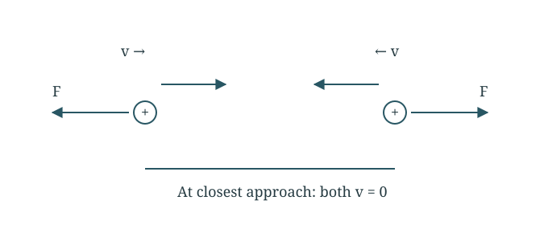
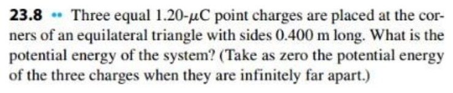
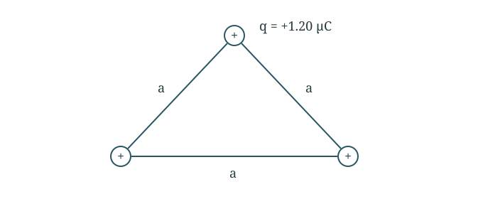
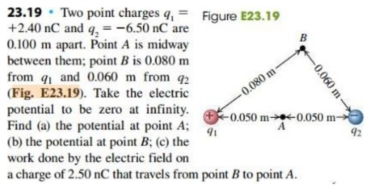
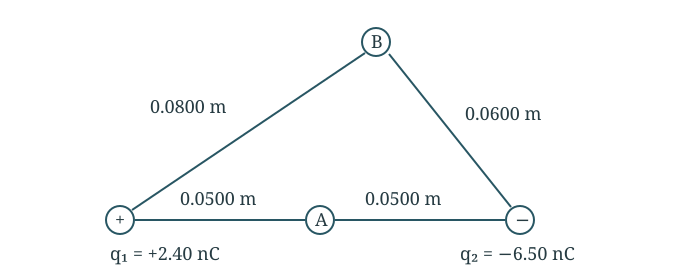
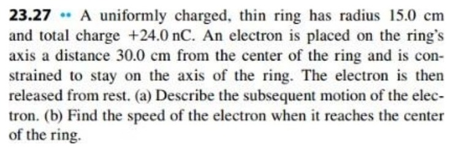
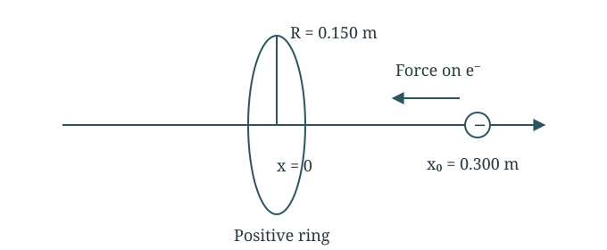

The turning point is closer than 0.400 m, so the intermediate speed is real and smaller than 22 m/s.
Question 323.7 · Two protons approaching head-on
Two protons start far apart, each moving at 2.00 × 10⁵ m/s toward the other in the Earth frame; mₚ = 1.673 × 10⁻²⁷ kg. Find their maximum repulsive force.
Original question


Both protons approach at the same speed. Their repulsive forces point away from one another.
Add both protons’ kinetic energies
Their speeds and masses are equal. Both stop momentarily at closest approach.
Using only one proton’s kinetic energy would give twice the separation and one-quarter the force.
Question 423.8 · Energy of three equal charges
Three charges q = +1.20 µC occupy an equilateral triangle of side a = 0.400 m. Find the energy relative to infinite separation.
Original question


Three equal charges form three distinct pairs of separation a.
Count the pairs
Three charges form three distinct pairs. Each pair has the same separation.
U=U12+U13+U23=3akq2
Substitute the values
The result is positive because work is needed to push like charges together.
U=0.4003(8.988×109)(1.20×10−6)2=0.0971J
Final answer
0.0971 J.
The energy is positive: external work is required to assemble repelling charges.
Question 523.19 · Potentials at two points
q₁ = +2.40 nC and q₂ = −6.50 nC are 0.100 m apart. A is their midpoint; B is 0.0800 m from q₁ and 0.0600 m from q₂. Find Vₐ, Vᵦ, and electric work moving +2.50 nC from B to A.
Original question


A is the midpoint of the charges. B is 0.0800 m from q₁ and 0.0600 m from q₂.
Part (a) Potential at A
A is halfway between the charges, so both distances are 0.0500 m.
Use the starting potential minus the ending potential.
W=qt(VB−VA)=(2.50×10−9)(32.956)=+8.24×10−8J
Final answer
Vₐ = −737 V; Vᵦ = −704 V; W = +8.24 × 10⁻⁸ J.
The positive test charge moves to lower potential, so the field does positive work.
Question 623.27 · Electron on a charged ring axis
Ring radius R = 0.150 m, charge Q = +24.0 nC. An electron starts at rest on its axis, x₀ = 0.300 m; constrain motion to the axis. Describe motion and find the speed through the centre.
Original question


The electron is constrained to the ring axis. Its restoring force points toward the ring plane.
Find the ring potential
Every ring element is the same distance from an axial point.
The electron passes through the centre, slows down, and turns at x = −0.300 m. It oscillates between ±0.300 m. The motion is not exactly simple harmonic at this amplitude.
Final answer
Oscillatory motion; centre speed 1.67 × 10⁷ m/s.
It oscillates between ±0.300 m, fastest at the centre. This finite-amplitude motion is not simple harmonic because force is not proportional to x.